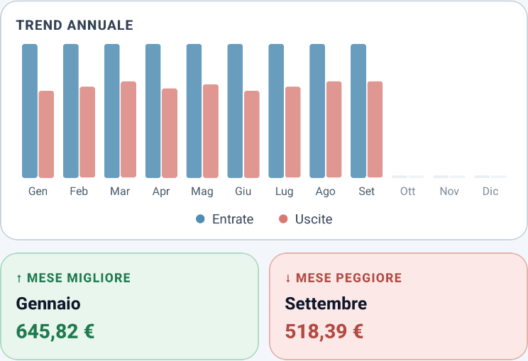

Ogni spesa al suo posto
Entrate e uscite per categoria; le spese fisse le inserisci una volta e Bada! le rimette nei mesi che scegli.

App per il budget personale, per Android
Segni entrate e spese, e Bada! ti dice quanto ti resta questo mese, tolti il margine di sicurezza e le quote per i tuoi obiettivi.
E non manda i tuoi dati a nessuno: l’app non ha nemmeno il permesso di usare Internet. Controlla tu
Apri Google PlayBadge ufficiale da aggiungereGratis · Senza account · Senza pubblicità · Solo Android

Prima di affidarle le tue spese
Un’app che conosce le tue spese, fatta da uno sviluppatore che non conosci: fai bene a diffidare. Ecco cosa puoi controllare da solo.
Nella scheda Play, tra le informazioni sull’app, puoi controllare le autorizzazioni: manca l’accesso completo alla rete. Senza quel permesso l’app non può aprire connessioni di rete da sola.
Alcune autorizzazioni arrivano dalle librerie incluse nell’app: badge dei launcher, Firebase Messaging e licenze o attribuzione delle installazioni Play. La loro presenza non equivale al permesso Internet. Il promemoria di Bada! è locale.
Quando tocchi un collegamento esterno, l’app può aprire il browser: da quel momento la connessione è gestita dal browser.
Dopo averla installata, attiva la modalità aereo e prova a segnare una spesa o a guardare il bilancio. Per usare il budget non serve una connessione.
Se la cartella del backup è sincronizzata con un cloud, la copia può uscire dal telefono. Anche il backup di sistema di Android può includere i dati dell’app.
Leggi l’informativa privacyDentro Bada!
Tocca una schermata per aprirla e ingrandirla nel browser.
Entrate e uscite per categoria; le spese fisse le inserisci una volta e Bada! le rimette nei mesi che scegli.
Dici quanto ti serve e per quando, e Bada! calcola la quota del mese ancora da versare e la toglie dal disponibile.

Importi il CSV della banca, Bada! trova date e importi, raggruppa per negozio e ricorda la categoria; prima di salvare rivedi tutto.

Il grafico dell’anno, con il mese migliore e il peggiore.

E poi: esporti i movimenti in CSV, un promemoria serale che tace se oggi hai già segnato una spesa, tema chiaro o scuro, valuta a scelta, italiano o inglese, e «Aggiungi spesa» tenendo premuta l’icona.
Una copia, nella cartella che scegli
Al primo avvio, o dalle Impostazioni, scegli una cartella del telefono: una volta al giorno, quando apri l’app, Bada! ci salva una copia completa, sempre nello stesso file, che resta anche se disinstalli l’app.
Sul telefono nuovo tocchi «Ho già usato Bada!», scegli la cartella e decidi cosa riportare: impostazioni, obiettivi, spese fisse, anni.
La copia ti segue se la cartella è sincronizzata o se porti il file sul telefono nuovo. Senza cartella non c’è copia, e l’app te lo ricorda.
Meglio saperlo prima di installarla.
È un progetto personale: niente pubblicità, niente abbonamento, niente account, nessun server che raccolga dati.
Non si collega a nessuna banca. Se la banca ti fa scaricare i movimenti in CSV, Bada! prova a riconoscere date, descrizioni e importi, e se sbaglia una colonna la scegli tu. Se ti dà un file Excel, salvalo prima in CSV. Ogni banca fa a modo suo: non tutti i formati sono garantiti.
Per il promemoria serale, alle 20:00 e modificabile. È locale: lo programma l’app sul telefono. Puoi dire di no, e il resto funziona uguale.
Chi la fa
Bada! la sviluppo da solo, in Italia.
[FRASE DI ANTONIO: perché l’ho fatta]
bada.aituoisoldi@gmail.comSe qualcosa non funziona, in fondo alle Impostazioni trovi «Esporta diagnostica», solo se l’app ha registrato un errore. È un file di testo: puoi leggerlo prima di decidere se inviarlo.
Il primo avvio ti guida passo passo e nessun passaggio è obbligatorio.
Apri Google PlayBadge ufficiale da aggiungereSe non fa per te la disinstalli: nessun account da chiudere.